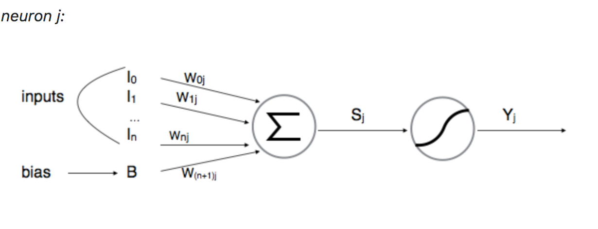
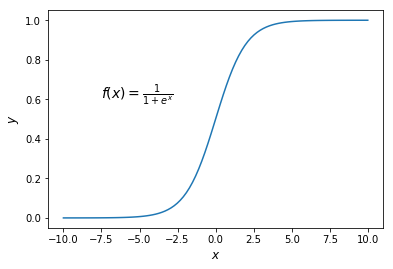
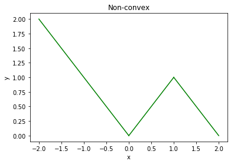

Tropical Geometry of Deep Neural Networks
Meg Walters - Data Scientist, AllstateVenu Tammali - Data Scientist, Arity
MOTIVATION
Deep neural networks have been very successful in a variety of
applications across many different areas of computer vision, speech
recognition and NLP.
Nevertheless, theoretical understanding of their efficacy remains incomplete.
There have been several attempts to analyze deep neural networks
from different perspectives.
Notably, earlier studies have suggested
that a deep architecture (More hidden layers) could use parameters
more efficiently and requires exponentially fewer parameters to express
certain families of functions than a shallow architecture
(Less hidden layers but more neurons per layer)
THINGS WE WILL LEARN
Connections between feedforward NN's with ReLU and tropical geometry
Family of feedforward NN's is equivalent to family of tropical rational maps
Zonotopes are the building blocks of deep NN's
THINGS WE WILL LEARN CONTD.
Relate decision boundaries of feedforward NN's to tropical hypersurfaces
Introducing new measure of complexity of NN's - Geometric Complexity
Deeper network is exponentially more expressive than a shallow network
THINGS WE WILL LEARN CONTD.
If we view a neural network as a function
$\mathcal{v} : \mathbb{R}^d \rightarrow \mathbb{R}^p, x = (x_1, \dots, x_d) \rightarrow (\mathcal{v}_1(x),\dots,\mathcal{v}_p(x))$
Then each $\mathcal{v}$ is a tropical rational map, i.e., each $\mathcal{v}_i$ is a tropical rational function.
In fact we will show the following three are equivalent
Tropical rational functions
A feedforward NN with ReLU activation and one neuron in output layer
Continuous piecewise linear functions with integer coefficients
PART - 1 - CONTENTS
- Neural network intro and notation
- Intro to tropical geometry and algebra
PART - 2 - CONTENTS
- Tropical algebra of neural networks
- Tropical geometry of neural networks
Intro to neural networks and notation
Deep and Shallow Neural Network Architecture
Neuron
Neurons are the basic unit of a neural network. In nature, neurons have a number of dendrites (inputs), a cell nucleus (processor) and an axon (output). When the neuron activates, it accumulates all its incoming inputs, and if it goes over a certain threshold it fires a signal.

Where $S_j = \sum_{i=0}^{n} W_{ij} \cdot l_i$, and
$Y_j = f_j(S_j)$, where $f_j$ is an activation function.
Activation function
Activation functions set the output behavior of each neuron in a network.
This output then feeds into the next layer of neurons.
Example activation functions
| Sigmoid | Hyperbolic Tangent | ReLU |
|---|---|---|
|  | 
|
Decision Boundary
Decision Boundary of a model illustrates the model's ability to seperate positive appending negative dataset. Figures below illustrate why Neural Networks are so much more powerful.
The above plots show that neural networks can learn more complex non-linear decision boundaries
Intro to tropical algebra and geometry
Tropical Algebra
| Operation | Notation | Definition |
|---|---|---|
| Addition | $x\oplus y$ | $\max \{x, y\}$ |
| Multiplication | $x\odot y$ | $x+y$ |
| Division | $x\oslash y$ | $x-y$ |
| Power ($a\in\mathbb{N}$) | $x^{\odot a}$ | $ax$ |
There is no additive inverse, so this is a semifield
Examples
$ \begin{align} 5\oplus 2 = 5 \\ 5\odot 2 = 7 \\ 5 \oslash 2 = 3\\ 5^{\odot 2} = 10 \\ \end{align} $ $$5\odot 2 \oplus 3 \odot 10 = 7\oplus 13 = 13$$
*Note the usual order of operations applies
Tropical Monomials
An expression of the form$$c\odot x_1^{a_1}\odot x_2^{a_2}\odot\dots\odot x_d^{a_d}$$
$$=(c + a_1x_1 + a_2x_2 + \dots + a_dx_d)$$
where $c\in \mathbb{R} \cup \{-\infty\}$, $x\in\mathbb{R}$, $a_i\in\mathbb{N}$
Example
$4\odot x_1^2\odot x_2^3 = $
Tropical Polynomials
An expression of the form$$f(x) = c_1x^{\alpha_1} \oplus c_2x^{\alpha_2}\oplus \dots\oplus c_rx^{\alpha_r}$$
$$=\max(c_1 + \alpha_1x, c_2+\alpha_2x, \dots, c_r + \alpha_rx)$$
where $\alpha_i \in \mathbb{N}^d$, $x\in\mathbb{R}^d$ and $c_i\in \mathbb{R} \cup \{-\infty\}$
Note that this is a tropical sum of tropical monomials
Examples
$4x^{10} \oplus 3x=$ $\max(4 + 10x, 3 + x)$
Examples CONTD.
$x^3y^5\oplus 4x \oplus y^7=$
$\max(1 + 3x + 5y, 4 + x, 1+7y)$
Tropical Rational Functions
A tropical rational function is a tropical quotient of two tropical polynomials $f(x)$ and $g(x)$Example
$(x_1^34x_2^5\oplus x_1)\oslash (x_2^5\oplus 2x_1x_2)$$=\max(3x_1 + 4 + 5x_2, 1+x_1) - \max(1+5x_2, 2+x_1+x_2)$
The "magic" behind tropical rational functions
| We will eventually be able to show equivalence between tropical rational functions and feedforward neural networks with ReLU activation. |
|---|
Tropical geometry
Associated with this tropical algebra are many tropical analogues of notions from classical algebraic geometryWhy Learn Tropical Hypersurfaces
In the second part of the series, we show that the decision boundary of a feed forward neural network with ReLU activaton is contained in the tropical hypersurface of a particular tropical polynomial.
Tropical hypersurface divides the domain into convex cells where a polynomial is linear. The number of these linear cells gives us a measure of complexity of a neural network. Higher the number of linear cell, greater the ability of NN to discriminate date points into different classes.
Tropical hypersurfaces
The tropical hypersurface of a tropical polynomial
$f(x) = c_1x^{\alpha_1}\oplus\dots\oplus c_rx^{\alpha_r}$ is the
set of points $x$ at which the value of $f$ at $x$ is attained by two
or more monomials in $f$.
Examples
$$4x^{10} \oplus 3x= \max(4+10x, 3+x)$$| Function plot | Tropical hypersurface |
|---|---|
Examples CONTD.
$$1\odot x^2 \oplus 1\odot y^2 \oplus 2\odot xy \oplus 2 \odot x \oplus 2 \odot y\oplus 2$$$$=\max(1+2x, 1+2y, 2+x+y, 2 + x, 2+y, 2)$$
| Function plot | Tropical hypersurface |
|---|---|
Why Learn Newton Polygons
The number of vertices in a Newton polygon gives us a lower bound on linear regions of a tropical polynomial.
Each edge from the Newton polygon $\Delta(f)$ corresponds to an unbounded edge in $\mathcal{T}(f)$.
Convex Hull
The convex hull of a set of points in $\mathbb{R}^d$ is the smallest convex set that contains all of the points.Newton Polygons
The Newton polygon of a tropical polynomial
$f(x) = c_1x^{\alpha_1} \oplus\dots\oplus c_rx^{\alpha_r}$ is the convex hull
of $\alpha_1, \dots, \alpha_r \in\mathbb{N}^d$ regarded as points in
$\mathbb{R}^d$
Note: this is the convex hull of the powers of $x$.
Examples
$f(x)=4x^{10} \oplus 3x$
Here we have $\alpha_1 = 10$ and $\alpha_2 =1$
Examples CONTD.
$$f(x)=1\odot x_1^2 \oplus 1\odot x_2^2 \oplus 2\odot x_1x_2 \oplus 2 \odot x_1 \oplus 2 \odot x_2\oplus 2$$
$\alpha_1 = (2, 0), \alpha_2 = (0, 2), \alpha_3=(1, 1),\\ \alpha_4 = (1, 0), \alpha_5=(0, 1), \alpha_6 = (0, 0)$
Linear regions
A linear region of a tropical rational map $F$ is a maximal connected
subset of the domain on which $F$ is linear.
It turns out we will be able to use tropical geometry to bound the number
of linear regions of the output of a neural network.
Why Learn Dual Subdivision?
Lets denote Newton Polygon by $\Delta(f)$, $\\$ Tropical Hypersurface by $\mathcal{T}(f)$, $\\$ and dualsubdivision by $\delta(f)$
Each edge from the Newton polygon $\Delta(f)$ corresponds to an unbounded edge in $\mathcal{T}(f)$. Each one-dimensional edge of a face in $\delta(f)$ corresponds to an edge in $\mathcal{T}(f)$.
So, dual subdivision gives us more information about the tropical hypersurface than the newton polygon.
Convex Polytope
A Convex polytope is a convex hull created by lifting each $\alpha_i$ from $\mathbb{R}^d$ into $\mathbb{R}^{d+1}$
by appending $c_i$ as the last coordinate .
Denote the convex hull of the lifted $\alpha_1$, $\dots$ , $\alpha_r$ as
$\mathcal{P}(f)$ := Conv {($\alpha_i$,$c_i$) $\in$ $\mathbb{R}^{d+1}$ $\times$ $\mathbb{R}$ : i = 1, $\dots$, r }}
The convex hull may be defined either as the intersection of all convex sets containing X, or as the set of all convex combinations of points in X.
Convex Polytope Example
Let's look at the convex polytope for the following example.
$f(x_1,x_2) = 1 \odot x_1^2 \oplus 1 \odot x_2^2 \oplus 2 \odot x_1 x_2 \oplus 2 \odot x_1 \oplus 2 \odot x_2 \oplus 2$
$ 1 \odot x_1^2 \rightarrow (2,0,1), \quad 1 \odot x_2^2 \rightarrow (0,2,1), \\ 2 \odot x_1 x_2 \rightarrow (1,1,2), \quad 2 \odot x_1 \rightarrow (1,0,2), \\ 2 \odot x_2 \rightarrow (0,1,2), \quad 2 \rightarrow (0,0,2) $

Dual Subdivision
A tropical polynomial $f(x)$ determines a dual Subdivision of $\Delta (f)$, constructed
as follows.
Let $UF(\mathcal{P}(f))$ denote the collection of upper faces in
$\mathcal{P}(f)$ and $\pi: \mathbb{R}^d \times \mathbb{R}$ be the projection
that drops the last coordinate.
The dual subdivision determined by f is then
$\delta(f) := \{ \pi(p) \subset \mathbb{R}^d : p \in UF(\mathcal{P}(f)))\}$
It turns out that each vertex in $\delta(f)$ corresponds to one "cell" in $\mathbb{R}^d$ where the function is linear. Thus, the number of vertices in $\mathcal{P}(f)$ provides and upper bound on the number of linear regions of f.
Dual Subdivision Example
The below figure shows the dual Subdivision for the tropical polynomial
$f(x_1,x_2)$ = $ 1 \odot x_1^2 \oplus 1 \odot x_2^2 \oplus 2 \odot x_1x_2 \oplus 2 \odot x_1 \oplus 2 \odot x_2 \oplus 2$

Transformation of Tropical Polytopes
Analysis of neural networks will require figuring out how the polytope $\mathcal{P}(f)$ transforms under tropical power, sum and product.
Let $f$ be a tropical polynomial and let $a \in \mathbb{N}$. Then
$\mathcal{P}(f^a) = a\mathcal{P}(f)$.
$a\mathcal{P}(f) = \{ ax : x \in \mathcal{P}(f) \} \subseteq \mathbb{R}^{d+1}$
Transformation of Tropical Polytopes Contd..
To describe the effect of tropical sum and product,
we define Minkowski Sum of two sets $P_1$ and $P_2$ in $\mathbb{R}^{d}$ is the set
$P_1 + P_2 := \{ x_1 + x_2 \in \mathbb{R}^{d} : x_1 \in P_1, x_2 \in P_2 \}$
In particular, the Minkowski sum of line segments is called a $zonotope$
Let $\mathcal{V}(P)$ denote the set of vertices of polytope $P$.
The Minkowski sum of two polytopes is given by the convex hull of the Minkowski
sum of their vertex sets, i.e.,
$P_1 + P_2 = Conv(\mathcal{V}(P_1) +\mathcal{V}(P_2))$.
Minkowski Sum Example
Let A be the vertex set containing $\{ (1,0) , (0,1) , (0,-1) \}$
Let B be the vertex set containing $\{ (0,0) , (1,1) , (1,-1) \}$
Then $A + B$
Transformation of polytopes Contd.
Let $f$, $g$ $\in$ $Pol(d,1) = \mathbb{T}[x_1,\dots,x_d]$ be
tropical polynomials. Then
$\mathcal{P}(f \odot g) = \mathcal{P}(f) + \mathcal{P}(g)$,
$\mathcal{P}(f \oplus g) = Conv(\mathcal{V}(\mathcal{P}(f)) \cup \mathcal{V}(\mathcal{P}(g)))$
Transformation of polytopes Example
Let f be a tropical polynomial - $ 0 \odot x \oplus 1 \oplus -1 $.
The coordinates of this tropical polynomial will be $\{ (1,0) , (0,1) , (0,-1) \}$
Let g be a tropical polynomial - $ 0 \oplus 1 \odot x \oplus -1 \odot x $.
The coordinates of this tropical polynomial will be $\{ (0,0) , (1,1) , (1,-1) \}$
Then $\mathcal{P}(f \odot g) = \mathcal{P}(f) + \mathcal{P}(g)$,
$\mathcal{P}(f \oplus g) = Conv(\mathcal{V}(\mathcal{P}(f)) \cup \mathcal{V}(\mathcal{P}(g)))$
BREAK TIME
LETS TAKE A BREAK FOR 5 Mins
After Break, We'll put all of this together and talk about:-
Tropical algebra of neural netowrks
- Recurrence relation for tropical rational maps of each layer
- Equivalence of tropical rational functions, continuous piecewise linear functions with integer coefficients, and ReLU neural networks satisfying certain conditions
-
Tropical geometry of neural networks
- Tropical geometry of decision boundary
- Geometric building blocks of neural networks
- Geometry complexity of deep neural networks
Neural network recap
| NN layers |
Neuron |
| Decision Boundary |
Activation Function (ReLU) |
Tropical algebra recap
| Operation | Notation | Definition |
|---|---|---|
| Addition | $x\oplus y$ | $\max \{x, y\}$ |
| Multiplication | $x\odot y$ | $x+y$ |
| Division | $x\oslash y$ | $x-y$ |
| Power ($a\in\mathbb{N}$) | $x^{\odot a}$ | $ax$ |
More tropical algebra
| Monomials |
$c\odot x^{\alpha} = c+\alpha x$
|
| Polynomials |
$c_1x^{\alpha_1}\oplus \dots \oplus c_rx^{\alpha_r}$ $$=\max(c_1 + \alpha_1x, \dots, c_r + \alpha_rx)$$ |
|
Rational Functions |
$f(x)\oslash g(x) = f(x) - g(x)$ |
Tropical algebra of neural networks
Assumptions
- Weight matrices of networks are integer valued
- Bias vectors are real-valued
- The activation function(s) take the form $\sigma(x) := \max\{x, t\}$ where $t\in (\mathbb{R}\cup\{-\infty\})$
Example network

Let's zoom in on the first layer of this network
Layer output
$$ \max\{A_1x + b_1, 0\}$$
We know
- Tropical rational functions are differences of tropical polynomials
- Tropical polynomials are convex
- We have no reason to believe that the network output is convex
How to decompose a layer of a network into its convex pieces?
Since our layer is a piecewise linear function, we can ensure each piece is convex by separating $A$ into its positive and negative components (which correspond to the slopes)
Example of a tropical map for a one layer network
|
We begin by decomposing $A_1$ into positive and negative components $A_{1+}$ and $A_{1-}$
|
Note that the output of the layer $\max\{A_1x+b, 0\}$ can be written as $$\max\{A_{1+}x + b_1, A_{1-}x\} - \max\{A_{1-}x, -\infty\}$$ $$\max\left\{\begin{bmatrix} 0&1\\ 1&0\\ 1&2\\ 0&1\\ 3&2 \end{bmatrix} \begin{bmatrix} x_1\\ x_2 \end{bmatrix} + \begin{bmatrix} 1\\ -1\\ 2\\ 0\\ -2 \end{bmatrix}, \begin{bmatrix} 1&0\\ 0&3\\ 0&0\\ 4&0\\ 0&0 \end{bmatrix} \begin{bmatrix} x_1 \\ x_2 \end{bmatrix} \right\} -\begin{bmatrix} 1&0\\ 0&3\\ 0&0\\ 4&0\\ 0&0 \end{bmatrix} \begin{bmatrix} x_1 \\ x_2 \end{bmatrix} $$ |
| Note that this is a tropical rational map. This expression is equal to | $$ \begin{bmatrix} (x_2\oplus x_1)\oslash(x_1)\\ (-x_1\oplus x_2^3)\oslash(x_2^3)\\ (2x_1x_2^2)\oplus 0)\oslash 0\\ (0\oplus x_1^4)\oslash(x_1^4) \\ (-2x_1^3x_2^2\oplus 0)\oslash 0 \end{bmatrix} $$ |
Decomposition of multi-layer networks into tropical rational functions
|
Suppose the nodes of the $\ell$th layer of a multi-layer network
are given by tropical rational functions:
$$ \nu^{\ell}(x)=F^{(\ell)}(x)\oslash G^{(\ell)}(x) = F^{(\ell)}(x) - G^{(\ell)}(x)$$ Then the outputs of the preactivation and of the $(\ell+1)$th layer are given by the tropical rational functions $$ \rho\circ\nu^{(\ell)}(x) = H^{(\ell+1)}(x) - G^{(\ell+1)}(x) $$ $$ \nu^{(\ell+1)}(x) = \sigma_{(\ell + 1)}\circ\rho\circ \nu^{(\ell)}(x) =F^{(\ell+1)}(x) - G^{(\ell+1)}(x) $$ respectively, where $$ F^{(\ell+1)}(x) = \max\{H^{(\ell+1)}(x) - G^{(\ell+1)}(x)\} \;\;\;\;\;\;\;\; f_{i}^{l+1} = h_{i}^{l+1} \oplus (g_i^{l+1} \odot t_{i}) $$ $$ G^{(\ell+1)}(x) = A_{-}^{(\ell+1)}+G^{(\ell)}(x) + A_{-}^{(\ell+1)}{-}F^{(\ell)}(x) \; \;\;\;\;\;\;\; g_{i}^{l+1} = [ \bigodot_{j=1}^{n} (f_{j}^{l})^ {a_{ij}^{-}} ] \odot [ \bigodot_{j=1}^{n} (g_{j}^{l})^{a_{ij}^{+}} ] $$ $$ H^{(\ell+1)}(x) = A_+^{(\ell+1)}F^{(\ell)}(x) + A_{-}G^{(\ell)}(x) + b^{(\ell+1)}\;\;\;\; h_{i}^{l+1} = [\bigodot_{j=1}^{n} (f_{j}^{l})^{a_{ij}^{+}}] \odot [\bigodot_{j=1}^{n} (g_{j}^{l})^{a_{ij}^{-}}] \odot b_{i} $$
Bottom line: If a one layer network
can be written as a tropical rational map,
then a network with
multiple layers can be written as a
tropical rational map
|
Equivalence of Neural Networks and Tropical Rational functions
- Let $\mathcal{v}: \mathbb{R}^{d+1} \rightarrow \mathbb{R}$. Then $\mathcal{v}$ is a tropical rational function if and only if $\mathcal{v}$ is a feedforward neural network with ReLU activation.
- A tropical rational function $f \oslash g$ can be represented as an L-layer neural network, with $ L \leq max\{\lceil log_2 r_f \rceil , \lceil log_2 r_g \rceil \} + 2 $, where $r_f$ and $r_g$ are the number of monomials in the tropical polynomials $f$ and $g$ respectively.
More about Tropical Rational functions
- Tropical rational function $f \oslash g : \mathbb{R}^{d+1} \rightarrow \mathbb{R}$ is a continuous piecewise linear function.
- Tropical hyper surface of a tropical rational function divide $\mathbb{R}^{d}$ into polyhedral regions on each of the which $f \oslash g$ is linear, although these regions are $nonconvex$ in general.
Let's return to our example network
\begin{multline} \max\{(x_2\oplus x_1^4)\odot((-2)\odot x_1^3x_2^2\oplus0)^3\odot x_1\odot(x_2^3)^2,\\ (1\odot x_2\oplus x_1)\odot((-1)\odot x_1\oplus x_2^3)^2\odot(2\odot x_1x_2^2\oplus 0)\odot x_1^4\}\\ \oslash (x_2\oplus x_1^4)\odot((-2)\odot x_1^3x_2^2\oplus 0)^3\odot x_1\odot(x_2^3)^2 \end{multline}
Tropical hypersurface and dual subdivision for the example network output
Assuming $\nu(x)=f(x)\oslash g(x)$, we have the following polytopes and dual subdivisions for the example network.
$f(x)$
$g(x)$
Equivalence of Continuous linear function and Tropical Rational functions
Let $\mathcal{v}: \mathbb{R}^{d+1} \rightarrow \mathbb{R}^{d}$. Then $\mathcal{v}$ is a continuous piecewise linear function with integer coefficients if and only if $\mathcal{v}$ is a tropical rational function.
BRINGING EVERYTHING TOGETHER
- Tropical rational functions.
- Continuous piecewise Linear functions with integer coefficients.
- feedforward NN with ReLU activation.
Decision boundaries of neural network
Lets study the decision boundaries of neural networks, focusing on the case of two-category classification.
$\mathcal{v}: \mathbb{R}^{d} \rightarrow \mathbb{R}^{p}$ together with a choice of score function $s: \mathbb{R}^{p} \rightarrow \mathbb{R}$ gives us such a classifier.
If the output value $s(v(x))$ exceeds some decision threshold $c$, then the neural network predicts x is from class, and otherwise x is from the other category.
Decision boundaries of neural network contd.
The input space is thereby partitioned into two disjoint subsets by the decision boundary.
$\mathcal{B} := \{x \in \mathbb{R}^d: \mathcal{v}(x) = s^{-1} (c)\}$.
Connected regions with value above the threshold and connected regions with value below the threshold will be called the positive and negative regions respectively.
Tropical geometry of decision Boundary
The following two results give us the bounds on the number of positive and negative regions and that there is a
tropical polynomial whose tropical hypersurface contains the decision boundary.
SOME NOTATION
Let $\mathcal{v}:\mathbb{R}^{d} \rightarrow \mathbb{R}$ be an L-layer feedforward neural network
with ReLU activation and $t^{L}= -\infty$. Let the score fuunction $s: \mathbb{R} \rightarrow \mathbb{R}$ be injective
with decision threshold c in its range. If $\mathcal{v} = f \oslash g$ where f and g are tropical polynomials, then
Tropical geometry of decision Boundary contd.
- Its decision boundary $\mathcal{B} := \{x \in \mathbb{R}^d: \mathcal{v}(x) = s^{-1} (c)\}$. divides $\mathbb{R}^{d+1}$ into at most $\mathcal{N}(f)$ connected positive regions and at most $\mathcal{N}(g)$ connected negative regions.
Where $\mathcal{N}(f)$ and $\mathcal{N}(g)$ are the number of linear regions in tropical polynomial $f$ and $g$.
Tropical geometry of decision Boundary contd.
- Its decision boundary $\mathcal{B} := \{x \in \mathbb{R}^d: \mathcal{v}(x) = s^{-1} (c)\}$ is contained in the tropical hypersurface of the tropical polynomial $ s^{-1} (c) \odot g(x) \oplus f(x)$ i.e., $ max \{ f(x), s^{-1} (c) + g(x) \}$
$\mathcal{B} \subseteq \mathcal{T} (s^{-1} (c) \odot g(x) \oplus f(x))$
- The function $ s^{-1} (c) \odot g(x) \oplus f(x)$ is not necessarily linear on every positive or negative region
Tropical geometry of decision Boundary contd.
$\mathcal{B} \subseteq \mathcal{T} (s^{-1} (c) \odot g(x) \oplus f(x))$
- The tropical hypersurface $ \mathcal{T} (s^{-1} (c) \odot g(x) \oplus f(x))$ may further divide a positive or negative region derived from $\mathcal{B}$ into multiple linear regions.
- Hence the $ \subseteq $ cannot in general be replaced by $"="$
Zonotopes - Building blocks of NN's
How are the tropical hypersurfaces of the tropical polynomials in the $(l)^{th}$ layer of a neural network related to those in the $(l-1)^{th}$ layer?
Let $f_i^{l}, g_i^{l}, h_i^{l}$ be the tropical polynomials produced by the $i^{th}$ node in the $l^{th}$ layer of a neural network.
- $f_{i}^{l} = h_{i}^{l} \oplus (g_i^{l} \odot t_{i}) $
- $g_{i}^{l} = [ \bigodot_{j=1}^{n} (f_{j}^{l-1})^ {a_{ij}^{-}} ] \odot [ \bigodot_{j=1}^{n} (g_{j}^{l-1})^{a_{ij}^{+}} ] $
- $h_{i}^{l} = [\bigodot_{j=1}^{n} (f_{j}^{l-1})^{a_{ij}^{+}}] \odot [\bigodot_{j=1}^{n} (g_{j}^{l-1})^{a_{ij}^{-}}] \odot b_{i}$
Zonotopes - Building blocks of NN's Contd.
We also know that if $f$, $g$ $\in$ $Pol(d,1) = \mathbb{T}[x_1,\dots,x_d]$ be tropical polynomials. Then
- $\mathcal{P}(f^a) = a\mathcal{P}(f)$.
- $\mathcal{P}(f \odot g) = \mathcal{P}(f) + \mathcal{P}(g)$
- $\mathcal{P}(f \oplus g) = Conv(\mathcal{V}(\mathcal{P}(f)) \cup \mathcal{V}(\mathcal{P}(g)))$
Zonotopes - Building blocks of NN's Contd.
$\mathcal{P}(g_{i}^{1})$ and $\mathcal{P}(h_{i}^{1})$ are points. $\mathcal{P}(f_{i}^{1})$ is a line segment.
Zonotopes - Building blocks of NN's Contd.
- Continuing for Layer 2: $\mathcal{P}(g_{i}^{2})$ and $\mathcal{P}(h_{i}^{2})$ are zonotopes.
Zonotopes - Building blocks of NN's Contd.
Continuing for Layer 2: $\mathcal{P}(f_{i}^{2})$.

Geometric Complexity of Deep NN's
The number of linear regions of a NN given by $\mathcal{v} : \mathcal{R}^{d} \rightarrow \mathcal{R}^{p}$ is bounded from above by $\mathcal{O}(n^{d(L-1)})$
- n is the number of Neurons
- L is the number of layers
- d is the dimension of the input data.
Hence we surmise that the number of linear regions of the neural network grows polynomially with the n and exponentially with the number of Layers L.
What's Next in the field
- Stability analysis of NNs.
- Effect of drop outs on NN decision boundary. Might give us a better way to do drop out instead of random drop outs
- Extension of this theory to other activation functions.
- Extesion of this theory to CNN's and RNN's
Conclusion
- Feedforward neural networks with rectified linear units are nothing more than tropical rational maps.
- Complexity of a neural network grows polynomially with number of neurons, and exponentially with number of Layers L.
- In other words, deep neural network is exponentially more expressive than shallow neural network.
Thank You
Questions??